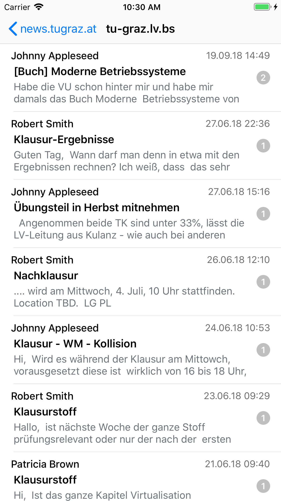
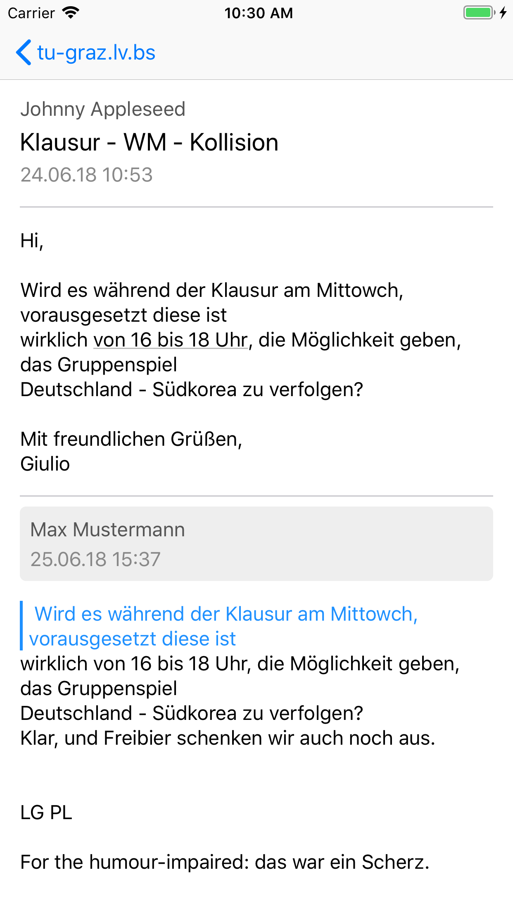

News
Always stay up to date with your favorite newsgroups using Newsgroup Reader for iOS.
This app does not only make reading newsgroups as simple as possible, but also allows you to view attachments such as images, pdfs and other files.
Scroll trough your newsgroups in modern feed-like design and view articles in a thread-like manner.
You can read newsgroups even without subscribing or subscribe with only one touch.
You can search your list of articles for title, author and content in order to find a desired article.
Use Siri Shortcuts to view newsgroup with just a voice command like "Hey Siri, open Operating Systems".
Works with TU Graz Newsserver news.tugraz.at

